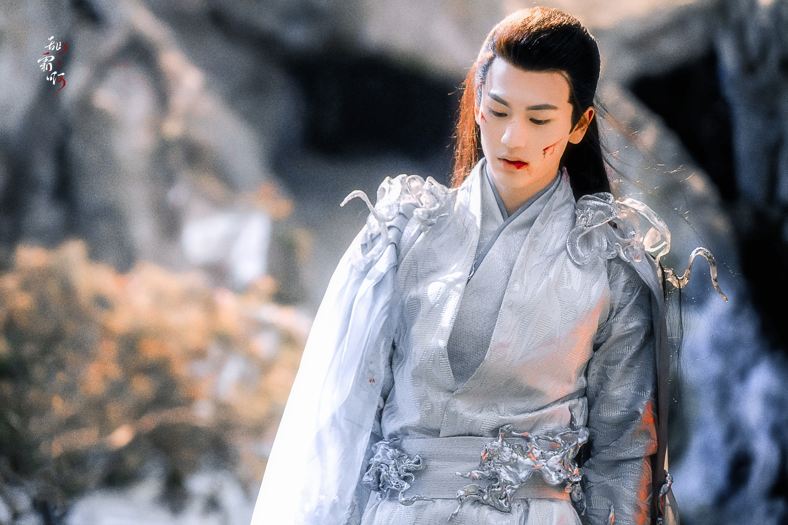
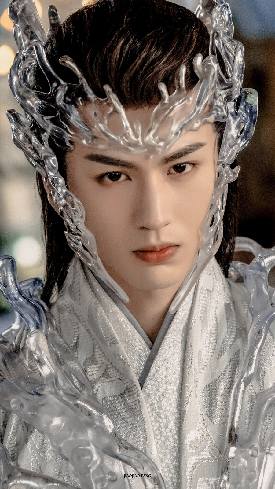

关于张凌赫
张凌赫，1998年出生于四川成都，是近年来中国影视圈最受瞩目的新生代男演员之一。 他以187cm的挺拔身姿、深邃的五官和精湛的演技迅速征服观众， 被誉为"新生代古装第一人"。从北京电影学院科班出身， 到一路凭实力走到台前，他的成长故事是一个关于坚持与才华的故事。
演员 · 实力与颜值并存
张凌赫，1998年出生于四川成都，是近年来中国影视圈最受瞩目的新生代男演员之一。 他以187cm的挺拔身姿、深邃的五官和精湛的演技迅速征服观众， 被誉为"新生代古装第一人"。从北京电影学院科班出身， 到一路凭实力走到台前，他的成长故事是一个关于坚持与才华的故事。
写真 · 剧照 · 大片


